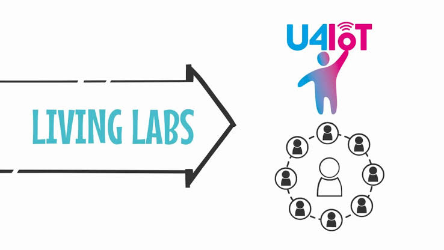
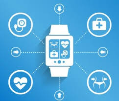

Monitoring and controlling operations of sustainable urban and rural infrastructures like bridges, railway tracks and on- and offshore wind-farms is a key application of the IoT. The IoT infrastructure can be used for monitoring any events or changes in structural conditions that can compromise safety and increase risk. The IoT can benefit the construction industry by cost saving, time reduction, better quality workday, paperless workflow and increase in productivity. It can help in taking faster decisions and save money with Real-Time Data Analytics. It can also be used for scheduling repair and maintenance activities in an efficient manner, by coordinating tasks between different service providers and users of these facilities.
.jpg)
There are several planned or ongoing large-scale deployments of the IoT, to enable better management of cities and systems. For example, Songdo, South Korea, the first of its kind fully equipped and wired smart city, is gradually being built, with approximately 70 percent of the business district completed as of June 2018. Much of the city is planned to be wired and automated, with little or no human intervention
Another application is a currently undergoing project in Santander, Spain. For this deployment, two approaches have been adopted. This city of 180,000 inhabitants has already seen 18,000 downloads of its city smartphone app. The app is connected to 10,000 sensors that enable services like parking search, environmental monitoring, digital city agenda, and more. City context information is used in this deployment so as to benefit merchants through a spark deals mechanism based on city behavior that aims at maximizing the impact of each notification.
Other examples of large-scale deployments underway include the Sino-Singapore Guangzhou Knowledge City work on improving air and water quality, reducing noise pollution, and increasing transportation efficiency in San Jose, California; and smart traffic management in western Singapore. Using its RPMA (Random Phase Multiple Access) technology, San Diego-based Ingenu has built a nationwide public network for low-bandwidth data transmissions using the same unlicensed 2.4 gigahertz spectrum as Wi-Fi. Ingenu's "Machine Network" covers more than a third of the US population across 35 major cities including San Diego and Dallas. French company, Sigfox, commenced building an Ultra Narrowband wireless data network in the San Francisco Bay Area in 2014, the first business to achieve such a deployment in the U.S.It subsequently announced it would set up a total of 4000 base stations to cover a total of 30 cities in the U.S. by the end of 2016, making it the largest IoT network coverage provider in the country thus far.Cisco also participates in smart cities projects. Cisco has started deploying technologies for Smart Wi-Fi, Smart Safety & Security, Smart Lighting, Smart Parking, Smart Transports, Smart Bus Stops, Smart Kiosks, Remote Expert for Government Services (REGS) and Smart Education in the five km area in the city of Vijaywada.
.jpg)
.jpg)
.jpg)
Significant numbers of energy-consuming devices (e.g. switches, power outlets, bulbs, televisions, etc.) already integrate Internet connectivity, which can allow them to communicate with utilities to balance power generation and energy usage and optimize energy consumption as a whole. These devices allow for remote control by users, or central management via a cloud-based interface, and enable functions like scheduling (e.g., remotely powering on or off heating systems, controlling ovens, changing lighting conditions etc.). The smart grid is a utility-side IoT application; systems gather and act on energy and power-related information to improve the efficiency of the production and distribution of electricity. Using advanced metering infrastructure (AMI) Internet-connected devices, electric utilities not only collect data from end-users, but also manage distribution automation devices like transformers.
.jpg)
Environmental monitoring applications of the IoT typically use sensors to assist in environmental protection by monitoring air or water quality, atmospheric or soil conditions, and can even include areas like monitoring the movements of wildlife and their habitats. Development of resource-constrained devices connected to the Internet also means that other applications like earthquake or tsunami early-warning systems can also be used by emergency services to provide more effective aid. IoT devices in this application typically span a large geographic area and can also be mobile. It has been argued that the standardization IoT brings to wireless sensing will revolutionize this area.
.jpg)
Another example of integrating the IoT is Living Lab which integrates and combines research and innovation process, establishing within a public-private-people-partnership. There are currently 320 Living Labs that use the IoT to collaborate and share knowledge between stakeholders to co-create innovative and technological products. For companies to implement and develop IoT services for smart cities, they need to have incentives. The governments play key roles in smart cities projects as changes in policies will help cities to implement the IoT which provides effectiveness, efficiency, and accuracy of the resources that are being used. For instance, the government provides tax incentives and cheap rent, improves public transports, and offers an environment where start-up companies, creative industries, and multinationals may co-create, share common infrastructure and labor markets, and take advantages of locally embedded technologies, production process, and transaction costs. The relationship between the technology developers and governments who manage city's assets, is key to provide open access of resources to users in an efficient way.
 